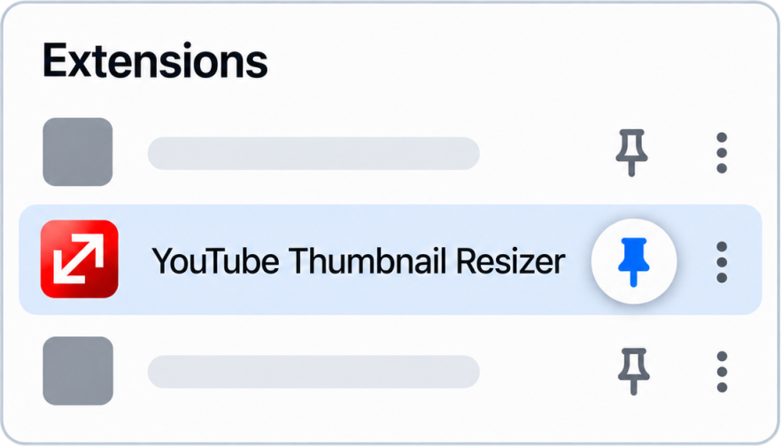
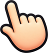

Let's pin it to the toolbar.
Find YouTube Thumbnail Resizer and click the pin icon.




Now the icon stays in the toolbar.
Click it any time you need to resize a thumbnail.
Resize images and enjoy life 🙂